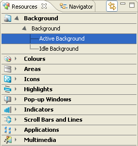

Resource View
The Resources view lists groups of theme elements and allows access
to all the theme components that can be edited. The element groups
listed depend on the type of theme being edited .
The Resources view can be thought of as a provider of a shortcut to the
different tasks of theme creation and a rough guide to the order in which
theme components should be customized
(see Editing themes for more details.)
Each category has one or more sub-categories, which can be expanded and collapsed by
clicking the pointer icon between the element group icon and its
description. Opening a sub-category lists all its component groups. When a
component group is selected, a representation is displayed in the Editor
view and its components are displayed in the Component view.

Figure:
Resource
view